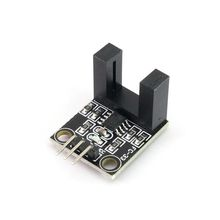

Фотоэлектрический датчик скорости двигателя на базе LM393
СенсорыЭто оптический датчик скорости вращения на базе компаратора LM393: он формирует цифровые импульсы при прохождении меток/отверстий на диске. Используется для измерения оборотов двигателя, подсчёта импульсов и позиционного контроля.
Это типовой модуль фотоэлектрического датчика скорости: ИК-излучатель и фотоприёмник работают через прорезь или перфорированный диск, а LM393 преобразует сигнал в цифровой выход. Модуль часто применяют для подсчёта оборотов коллекторных двигателей, энкодеров и простых систем автоматизации. Обычно на плате есть индикатор состояния выхода и отверстие/крепление для монтажа. Для работы требуется питание 3.3–5 В, а на выходе получается цифровой TTL-сигнал. Точные механические размеры зависят от конкретной платы, но у распространённого модуля Joy-IT SEN-Speed указаны 32 × 14 мм и ширина прорези 5 мм.